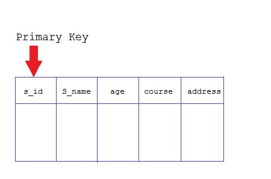
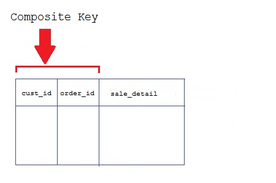

Keys are very important part of Relational database. They are used to establish and identify relation between tables. They also ensure that each record within a table can be uniquely identified by combination of one or more fields within a table.
Super Key is defined as a set of attributes within a table that uniquely identifies each record within a table. Super Key is a superset of Candidate key.
Candidate keys are defined as the set of fields from which primary key can be selected. It is an attribute or set of attribute that can act as a primary key for a table to uniquely identify each record in that table.
Primary key is a candidate key that is most appropriate to become main key of the table. It is a key that uniquely identify each record in a table.

Key that consist of two or more attributes that uniquely identify an entity occurance is called Composite key. But any attribute that makes up the Composite key is not a simple key in its own.

The candidate key which are not selected for primary key are known as secondary keys or alternative keys
Non-key attributes are attributes other than candidate key attributes in a table.
Non-prime Attributes are attributes other than Primary attribute.